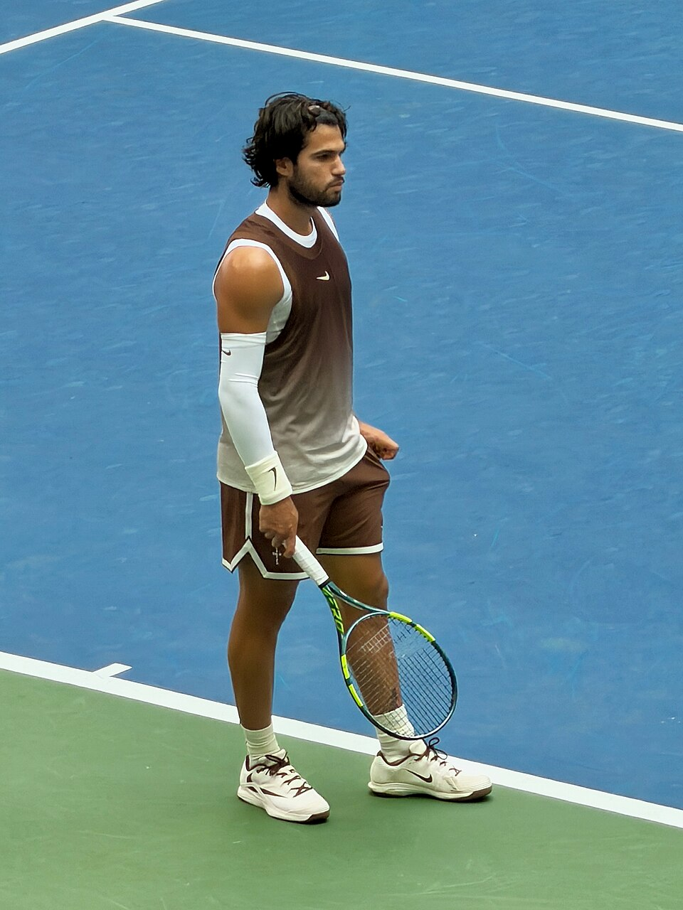

Carlos Alcaraz conquistou o ATP 500 de Viena de 2026 com uma atuação dominante na decisão contra Alex de Minaur. Neste domingo, 1º de novembro, o espanhol venceu o australiano por 2 sets a 0, no Wiener Stadthalle, na capital austríaca, e levantou pela primeira vez o troféu do Erste Bank Open.
A conquista teve um significado especial para Alcaraz. Além de terminar a competição sem perder um único set nos cinco jogos disputados, o espanhol chegou ao seu 28º título de simples no circuito ATP, sendo o quarto da temporada de 2026. O resultado também confirmou uma campanha impecável nos torneios ATP 500 daquele ano, com 16 vitórias em 16 partidas disputadas na categoria.
Como foi a final
A decisão começou com Alcaraz pressionando imediatamente o serviço de Alex de Minaur. O espanhol conseguiu uma quebra logo no primeiro game, estabelecendo uma vantagem que seria determinante para o andamento da primeira parcial.
De Minaur teve a oportunidade de devolver a quebra na sequência, mas não conseguiu aproveitar. Alcaraz manteve a intensidade nas trocas de bola, conquistou novas quebras e abriu uma vantagem expressiva.
Embora cinco dos sete games do primeiro set tenham chegado à igualdade de 40 a 40, o espanhol foi superior nos pontos decisivos. Com três quebras de serviço, fechou a parcial por 6/1.
O placar refletiu principalmente a eficiência de Alcaraz nas oportunidades importantes. Sua capacidade de atacar sem abrir mão da consistência obrigou o australiano a trabalhar constantemente para permanecer nos pontos.
O segundo set apresentou um cenário diferente. De Minaur conseguiu maior estabilidade nos próprios games de saque e ofereceu resistência mais consistente.
O australiano salvou oportunidades de quebra no segundo, no quarto e no oitavo games, mantendo a disputa equilibrada até o 4/4. Mesmo encontrando dificuldades para transformar suas chances em vantagem, Alcaraz continuou pressionando.
O momento decisivo aconteceu quando De Minaur sacava em 4/5 para permanecer na partida. O australiano chegou a abrir 30/0, mas Alcaraz reagiu, conquistou o primeiro match point e encerrou a final com uma sequência de golpes de alto nível.
Na última troca de bolas, o espanhol utilizou uma deixada de backhand, respondeu à movimentação do adversário com um lob e concluiu o ponto com uma direita cruzada. A jogada sintetizou a combinação de criatividade, velocidade e controle que marcou sua atuação.
O 6/4 confirmou o título de Alcaraz sem necessidade de tie-break ou terceiro set.
Veja os melhores momentos da partida abaixo:
O desempenho de Alcaraz na final em números
A superioridade apareceu nas estatísticas da decisão. O espanhol venceu 81% dos pontos disputados com seu primeiro saque, conquistando 29 de 36 pontos nessa condição.
A eficiência no serviço foi importante para impedir que De Minaur encontrasse oportunidades frequentes de reação. Mesmo quando o australiano conseguiu equilibrar as trocas de bola, Alcaraz encontrou alternativas para manter o controle do confronto.
A partida também demonstrou a versatilidade do campeão. O espanhol conseguiu construir pontos com potência do fundo da quadra, variar os golpes com deixadas e utilizar a própria velocidade para transformar situações defensivas em oportunidades de ataque.
Contra um adversário que tem na movimentação uma de suas maiores virtudes, essa combinação foi especialmente importante.
A campanha completa de Carlos Alcaraz no ATP de Viena 2026
O título foi construído com cinco vitórias, todas por 2 sets a 0. Apesar da campanha invicta em sets, Alcaraz encontrou dificuldades em diferentes momentos e precisou disputar quatro tie-breaks durante o torneio.
Todos os resultados do espanhol:
- 1. Primeira rodada: venceu Karen Khachanov por 6/4 e 7/6(5).
- 2. Oitavas de final: venceu Nikoloz Basilashvili por 6/1 e 7/6(11).
- 3. Quartas de final: venceu Tommy Paul por 6/4 e 7/6(2).
- 4. Semifinal: venceu Daniil Medvedev por 6/4 e 7/6(2).
- 5. Final: venceu Alex de Minaur por 6/1 e 6/4.
A estreia contra Khachanov foi um dos primeiros testes importantes. O russo chegou a sacar para vencer o segundo set, mas Alcaraz recuperou a quebra e garantiu a vitória no tie-break.
Nas oitavas, contra Basilashvili, o espanhol precisou salvar quatro set points no desempate da segunda parcial antes de confirmar a classificação.
O confronto com Tommy Paul, nas quartas de final, exigiu novamente concentração nos momentos decisivos. Alcaraz salvou os cinco break points enfrentados e venceu o tie-break do segundo set por 7 a 2.
A semifinal reservou um duelo de alto nível contra Daniil Medvedev, campeão do torneio em 2022. Alcaraz venceu por 6/4 e 7/6(2), encerrando uma sequência de sete vitórias consecutivas do adversário.
Na decisão, o espanhol encontrou o quinto cabeça de chave, Alex de Minaur, que havia eliminado Alexander Zverev na semifinal.
A classificação de Carlos Alcaraz para a decisão veio após uma vitória sobre Daniil Medvedev na semifinal, enquanto Alex de Minaur garantiu sua vaga ao superar Alexander Zverev. Os dois confrontos definiram o cenário da disputa pelo título, detalhado na cobertura dos resultados das semifinais. Na decisão, Alcaraz confirmou o favoritismo e conquistou o troféu sem perder sets durante toda a campanha.
Alcaraz amplia vantagem histórica
A decisão de Viena também aumentou a vantagem de Carlos Alcaraz no confronto direto contra Alex de Minaur.
Com a vitória na Áustria, o espanhol chegou a sete triunfos em sete partidas contra o australiano no circuito ATP.
O retrospecto inclui confrontos disputados em diferentes superfícies, demonstrando a capacidade de Alcaraz de encontrar soluções contra o estilo veloz e defensivo do rival.
De Minaur chegou à final austríaca depois de uma campanha importante. Campeão do ATP 500 de Roterdã em 2026, o australiano acumulava dez vitórias consecutivas em partidas de quadra dura coberta naquela temporada antes de enfrentar Alcaraz.
A vitória sobre Zverev na semifinal reforçou sua competitividade. Entretanto, na decisão, o australiano encontrou um adversário que conseguiu neutralizar parte de suas principais características.
O resultado manteve a invencibilidade de Alcaraz no confronto direto e confirmou a dificuldade de De Minaur para superar o espanhol.
A representatividade do título
O ATP 500 de Viena acrescentou mais um capítulo importante à trajetória de Carlos Alcaraz.
Aos 23 anos, o espanhol conquistou o 28º título de simples da carreira no circuito principal e alcançou seu 11º troféu em torneios ATP 500.
Na história da categoria desde a criação da série ATP 500, em 2009, Alcaraz passou a ocupar a quarta posição entre os tenistas com mais títulos.
Maiores campeões da série ATP 500 até o torneio de Viena de 2026:
- 1. Roger Federer — 16 títulos
- 2. Novak Djokovic — 15 títulos
- 3. Rafael Nadal — 15 títulos
- 4. Carlos Alcaraz — 11 títulos
- 5. Andy Murray — 9 títulos
A marca coloca Alcaraz em um grupo histórico formado por alguns dos principais nomes do tênis masculino. A referência de 16 conquistas de Roger Federer permanece como o recorde da categoria desde 2009.
Outro dado expressivo foi a sequência de 26 vitórias consecutivas de Alcaraz em torneios ATP 500. Sua última derrota nesse nível havia acontecido na final do ATP de Barcelona de 2025, diante de Holger Rune.
Em 2026, o espanhol conquistou os torneios de Doha e Tóquio antes de levantar o troféu em Viena, completando uma campanha de 16 vitórias sem derrotas na categoria ao longo da temporada.
A importância do ATP de Viena no circuito masculino
O Erste Bank Open é um dos torneios tradicionais da parte final da temporada do tênis masculino. Disputado em quadras duras cobertas, integra a categoria ATP 500 e distribui 500 pontos no ranking ao campeão.
As condições de jogo em ambiente fechado eliminam interferências externas como vento e chuva, mas exigem precisão no saque, qualidade na devolução e capacidade de adaptação à velocidade da quadra.
Essas características ajudam a explicar o valor da conquista de Alcaraz. O espanhol demonstrou eficiência tanto em trocas prolongadas quanto nos pontos de maior agressividade, além de controlar situações de pressão nos desempates ao longo da campanha.
O torneio também reuniu adversários importantes do circuito, incluindo Alexander Zverev, Daniil Medvedev, Alex de Minaur e outros jogadores de destaque da ATP.
Para Alcaraz, conquistar o título sem perder sets representou uma demonstração de consistência justamente em uma superfície e em condições nas quais vinha buscando ampliar sua confiança.
Viena passou, assim, a integrar a lista de conquistas importantes de sua carreira. O primeiro título do espanhol na capital austríaca não ficou marcado apenas pelo placar da decisão, mas pela combinação de invencibilidade em sets, superioridade contra um rival de alto nível e mais um avanço em sua trajetória entre os maiores vencedores do circuito ATP.